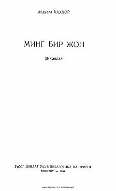

MBAbdulla Qahhorning ijtimoiy va hayotiy mavzulardagi sara hikoyalar to'plami.
Abdulla Qahhorning ushbu to'plami o'zbek adabiyotining durdonalari hisoblangan hikoyalarni o'z ichiga oladi. Kitobda 'O'g'ri' kabi mashhur asarlar orqali o'tmishdagi ijtimoiy adolatsizliklar va insoniy taqdirlar mahorat bilan tasvirlangan.